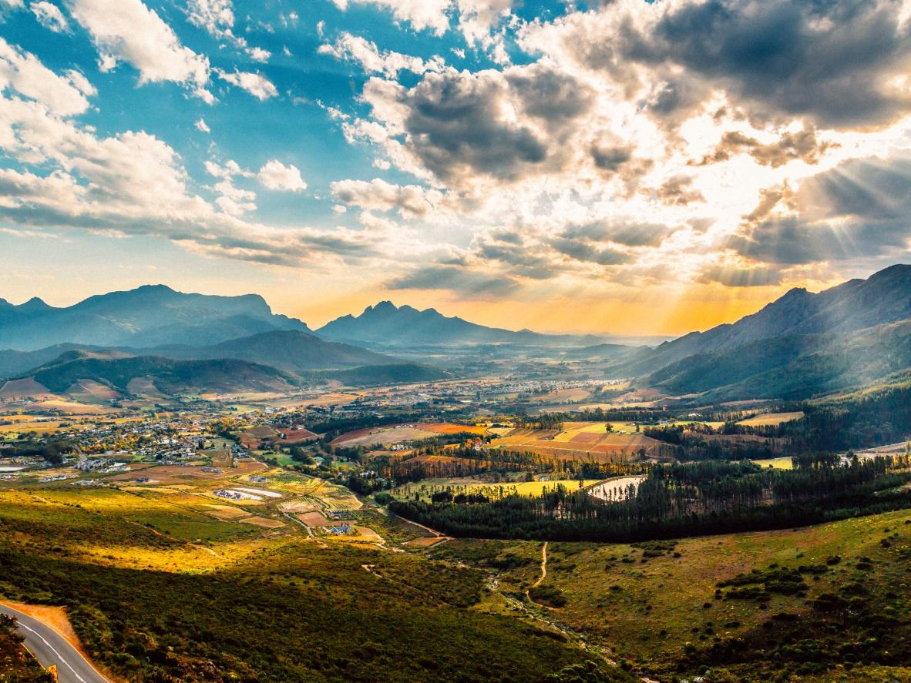
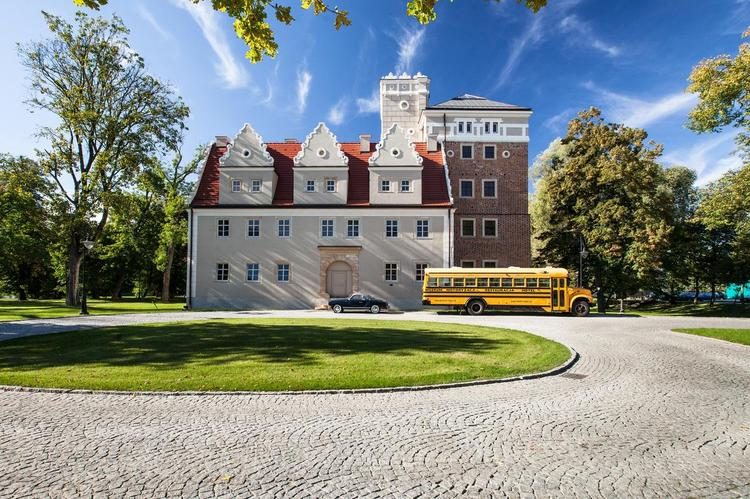
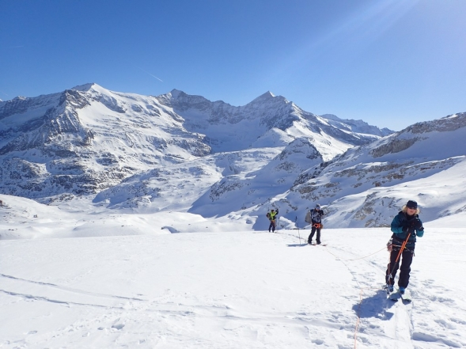

Oferta
Wiosna
Jeśli marzy Ci się chłodna, ale słoneczna pogoda, w okresie od marca do maja odwiedź Franschhoek, enklawę smakoszy Południowej Afryki. Tamtejsze trasy wiją się wokół rozległych kwiatowych łąk, a łagodne promienie słońca sprawiają, że Dolina Franschhoek skąpana jest w kasztanowej poświacie. Miasto cechuje się kolonialnym dziedzictwem oraz silną tradycją winiarską; było to bowiem pierwsze miejsce w Południowej Afryce, w którym Francuzi wyprodukowali wino ponad 300 lat temu.
Lato
Klimat Kenii jest bardzo przyjazny dla człowieka, choć w zależności od tego, w jakiej części kraju zaplanujemy wakacje, będzie się nieco różnił. Najbardziej korzystne warunki panują na wybrzeżu, gdzie utrzymuje się temperatura ok. 30 °C. W Kenii występują dwie pory deszczowe: krótka, która trwa od połowy października do grudnia i długa, trwająca od marca do maja. Pod koniec marca opady są bardzo intensywne – zamknięte są wówczas parki górskie i rezerwaty. To okres, w którym na świat przychodzą małe lwy, zebry czy antylopy.
Jesień
W podwrocławskiej Ślęzie znajduje się jedno z najbardziej wyjątkowych miejsc noclegowych na Dolnym Śląsku. XIV-wieczny Zamek Topacz jest położony w otoczeniu niemal 30 hektarów łąk i lasów. Przez jego teren przepływają dwie rzeki – Ślęza i Młynówka, a wchodzące w skład kompleksu budynki są otoczone nastrojowymi ogrodami. Poza rozległymi terenami, sprzyjającymi długim, relaksującym spacerom, na terenie zamkowego kompleksu znajduje się również między innymi słynne muzeum motoryzacji, w którym można zobaczyć klasyczne pojazdy z lat 30-tych.
Zima
Granatspitzgruppe to część Wysokich Taurów w Alpach Wschodnich. Leży na terytorium Austrii, na pograniczu dwóch landów: Tyrolu i Salzburga. Najwyższym szczytem grupy jest Muntanitz (3232 m n.p.m.). My zapraszamy w rejon Enzingerboden, kurortu położonego na wysokości 1468 m n.p.m., w dolinie Stubachtal, nad jeziorem Stause, na terenie Parku Narodowego Wysokie Taury. Wchodzi w obszar grupy Glockner. Z Enzingerboden mamy 32 km do Kaprun I 37 km do Zell am See. Nasz hotel znajduje się ok. 900 m powyżej Enzingerboden, w niezwykłej scenerii alpejskich sczytów.
Formularz zgłoszeniowy